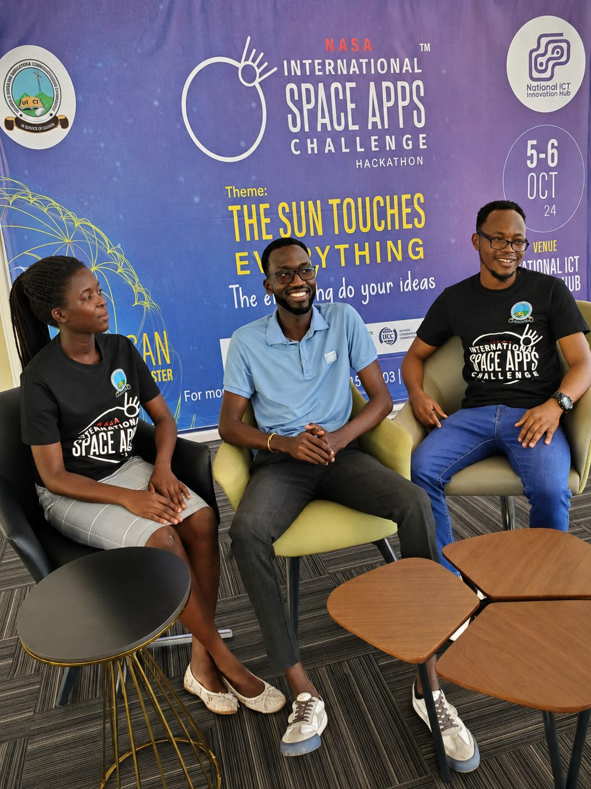
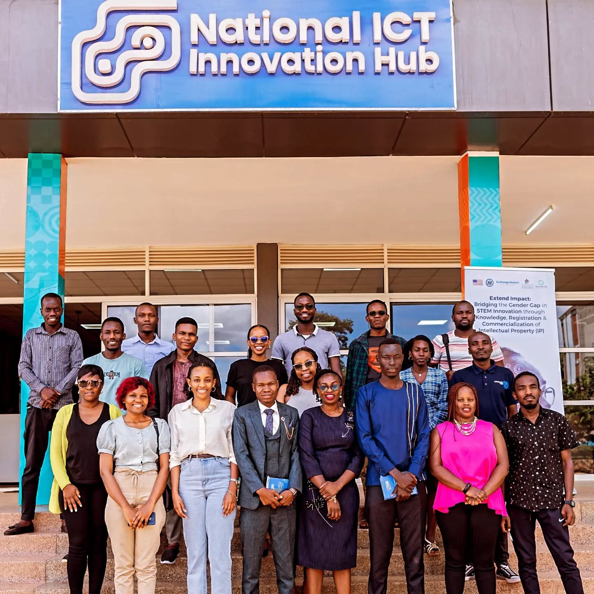
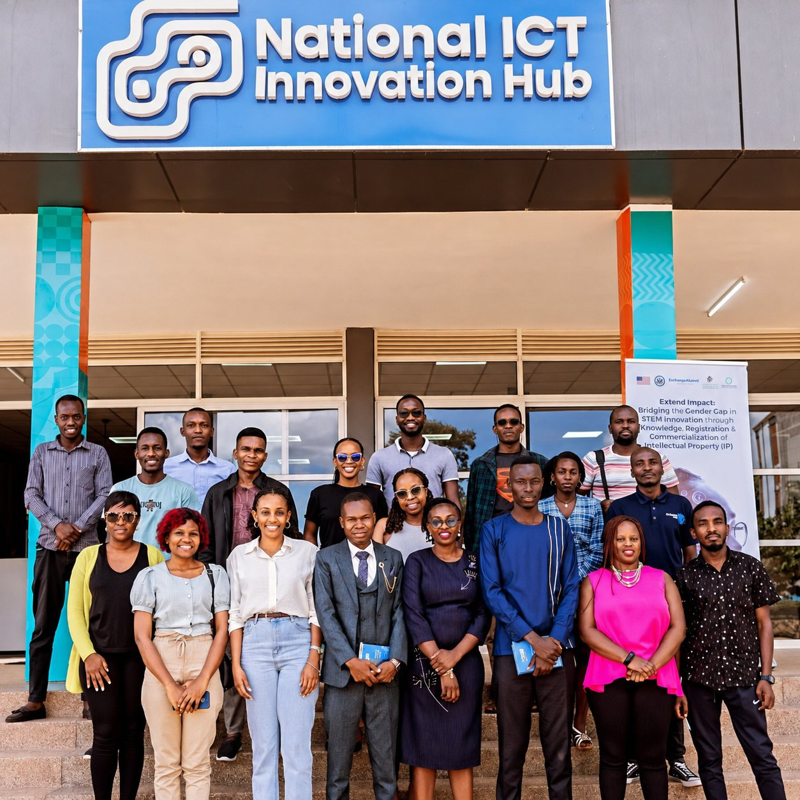

Almost everything I know about building systems that survive contact with real users, I learned twice: once from a production incident, and once from a room full of people who had hit the same wall earlier.
Kampala has more of those rooms than people outside it expect. Over the last two years the useful ones for me have been a hackathon, a developer conference on a university campus, an intellectual-property workshop, and an innovation hub that quietly hosts most of the rest.
A hackathon that was actually about constraints
In October 2024 I took part in the NASA International Space Apps Challenge, hosted in Kampala at the National ICT Innovation Hub. The theme that year was The Sun Touches Everything. Our team came out of it with a Galactic Problem Solver recognition.

What I actually took from it had little to do with space. A hackathon is a forced lesson in scoping: you have two days, an open brief, real data, and no room for the architecture you would build if you had a quarter. You ship the thin slice that demonstrates the idea, and you learn very quickly which parts of your instinct are engineering and which are decoration.
That maps directly onto the work. When a payment reconciliation problem surfaces on a Friday afternoon, nobody wants the general solution. They want the specific answer, evidenced, today — and a note about what the general solution would cost.
Developer communities, and the value of being wrong in public
The Google Developer Groups on-campus community at Makerere runs an AI festival that pulls in people building with tools I would otherwise only read about — alongside local outfits like Sunbird AI doing language work for East African contexts.
The specific value of a room like that is not the talks. It is the twenty minutes afterwards when you describe a problem out loud to someone with no stake in your solution, and they ask the question you had been carefully walking around. I have had an approach dismantled in that window more than once, and it was cheaper every time than finding out in production.
There is a second thing these rooms do that is easy to underrate. Working as one of two people in an IT function, the default failure mode is calibration drift — you lose track of whether your practices are normal, conservative or reckless, because there is nobody to compare against. A conference is a cheap recalibration.
Intellectual property, which engineers ignore for too long
In 2025 I sat through a Uganda Registration Services Bureau workshop at the National ICT Innovation Hub on registering and commercialising intellectual property in STEM, run under a programme on closing the gender gap in STEM innovation.

It was the least technical event on this list and possibly the most useful. Engineers are trained to think the artefact is the code. The workshop was a sustained argument that the artefact is also the thing you can name, register, license and defend — and that the gap between building something and owning something is procedural, not technical.
I write down the methods I invent now, with a register entry, an honest note on whether the thing is genuinely original or a local instance of a known practice, and evidence that it exists on disk. That habit started in that room.
The hub in the background

Three of the four events above happened at, or came out of, the National ICT Innovation Hub. Physical infrastructure for a developer community is unglamorous and hard to justify on a spreadsheet, and it is the reason a hackathon, a training programme and a cohort of strangers end up in the same building often enough to recognise each other.
Why any of this belongs on a portfolio
Case studies show what someone delivered. They do not show whether that person is still learning, or has simply been repeating one year of experience for several years running.
I would rather be judged on both: the systems, and the rooms. The systems show what I can do now. The rooms are the reason the answer to that question keeps changing.
Leave a reply
This site has no comment database, so a reply opens in your own email app and comes straight to me.